- 一.多人开发1.0版本
1.经理打印"经理开发1.0版本"代表正在开发1.0版本,之后commit提交并push到共享版本库中(Source Control -> commit)
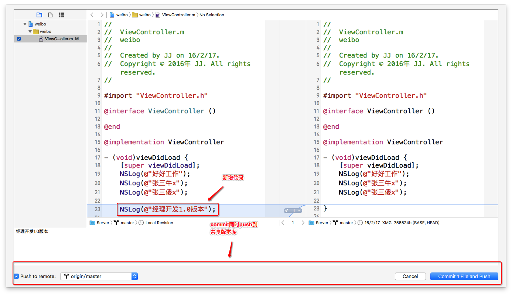2.张三将经理push的代码从共享版本库pull到本地(Source Control -> pull)
3.张三打印"张三完整1.0版本的开发"代表1.0版本已经开发完毕,之后commit提交并push到共享版本库中(Source Control -> commit)

4.经理将张三push的代码从共享版本库pull到本地(Source Control -> pull)
- 二.经理对1.0版本进行备份
1.来到经理的weibo工作目录通过终端备份标签名为"weibo1.0",注释为"这个是1.0版本"
git tag -a weibo1.0 -m "这个是1.0版本" : 给某个版本打上标签
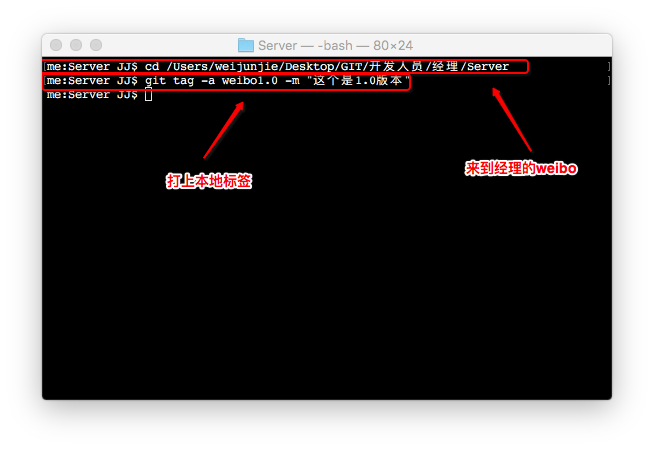2.查看标签
git tag : 查看所有的标签

3.将打的标签push到服务器
git push origin weibo1.0 : 将weibo1.0push到默认的代码仓库
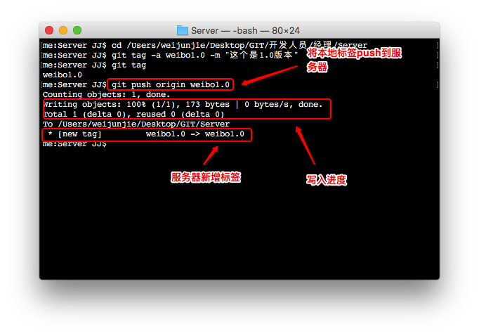
- 三.多人开发2.0版本
1.经理打印"开始进行2.0版本的开发",代表正在开发2.0版本.之后commit提交并push到共享版本库中(Source Control -> commit)

2.张三将经理push的代码从共享版本库pull到本地(Source Control -> pull)
- 四.1.0版本有bug,修复bug
1.经理目录下新建文件夹"weibo1.0fixbug",并将服务器所有的内容clone到本地
git clone 服务器地址
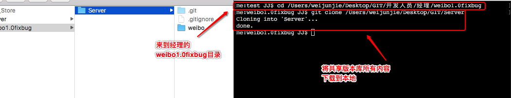2.将当前的代码转为打上标签的代码
git checkout weibo1.0

4.创建分支名为weibo1.1fixbug,并切换到这个分支
git checkout -b weibo1.1fixbug
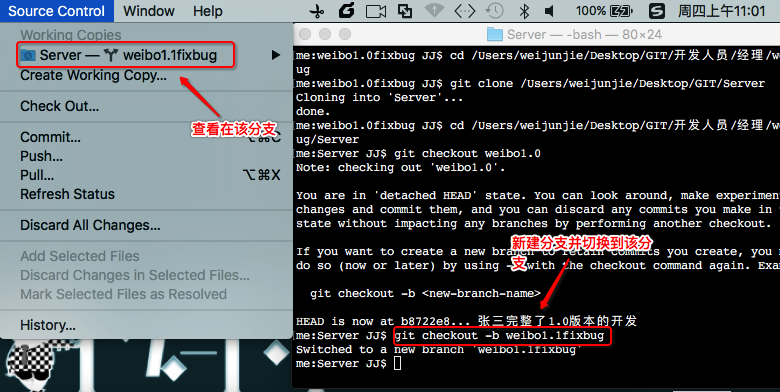5.项目经理写个方法"fixBug"代表修复了1.0的bug,并将修复完bug的版本提交到服务器(Source Control -> Commit)
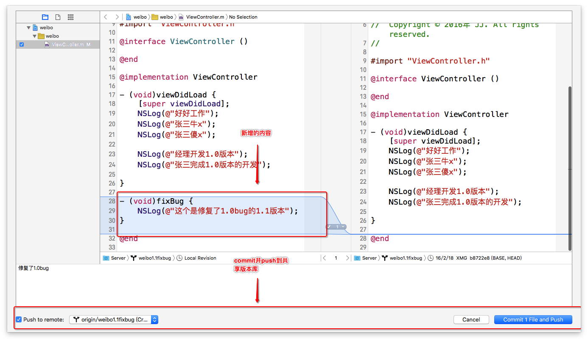6.给修复好的版本打上tag(注意:标签名不能重复,也不能和分支名重复)
git tag -a weibo1.1 -m "这是修复了1.0版本的1.1版本"
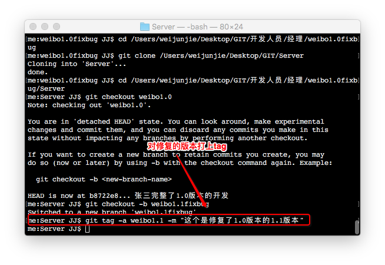8.查看所有标签
git tag

9.将打上标签的1.1版本push到服务器
git push origin weibo1.1

- 五.将1.1版本合并到正在开发的2.0版本,来到正在开发的2.0项目
1.(Source Control)点击pull,从分支weibo1.0fixbug里面将代码pull到本地代码仓库

2.将本地代码仓库的内容push到master主干(Source Control -> push->master)
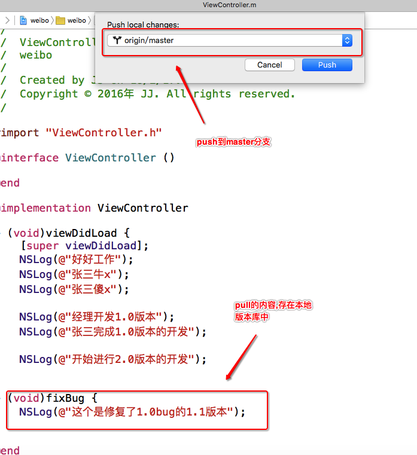3.张三从master分支pull最新的代码(Source Control -> pull->master)
- 六.删除分支
1.查看所有分支
git branch -r
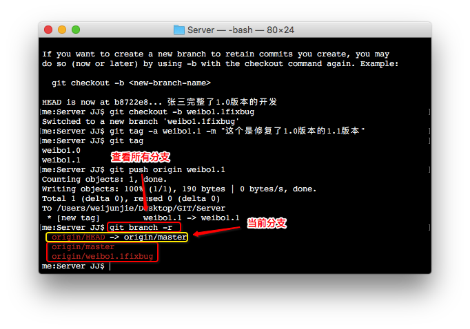2.删除本地分支
gitbranch -D 分支的名称（原笔迹没有，补充）
3.删除weibo1.0fixbug分支,需要全路径
git branch -r -d origin/weibo1.1fixbug
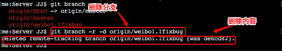
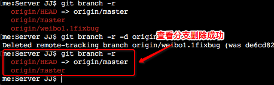4.删除远程的分支
git push origin --delete 分支名:删除服务器的分支
- 七.总结
1.开发流程:
1.开发1.0版本
2.1.0版本开发完成,对1.0版本打上标签,并将标签push到共享版本库
3.开始开发2.0版本
4.突然1.0版本有bug
5.新建文件夹从共享版本库把所有代码下载到本地
6.切换到打上标签的代码
7.创建分支并切换到该分支
8.在分支中修复bug并提交到共享版本库
9.将修复完的代码从分支合并到正在开发的2.0版本的分支
10.继续2.0版本的开发
2.分支和标签名不能重复
git push origin 分支名 :提交分支到共享版本库